사물 인터넷과 센서 제어 · AI 영상 특강 2
Flow 따라하기 프롬프트 생성기
아래 내 제품 칸을 채우면, 각 단계의 실제 Flow 화면 아래에 그 화면에서 붙여넣을 문장이 내 제품으로 완성되어 나옵니다. 화면은 2026년 9월 3일 실제 세션(클린봇)을 그대로 캡처한 것입니다. 쓴 내용은 이 브라우저에 자동 저장됩니다.
1새 프로젝트
Flow 홈 가운데 + 새 프로젝트 → 왼쪽 메뉴, 오른쪽 에이전트 채팅창
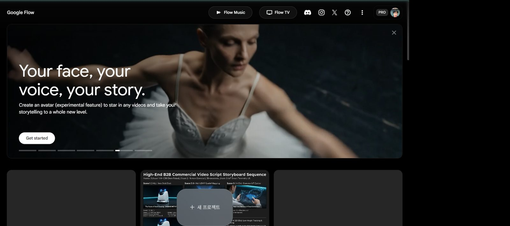
여기Flow 홈. 가운데 + 새 프로젝트를 누른다.
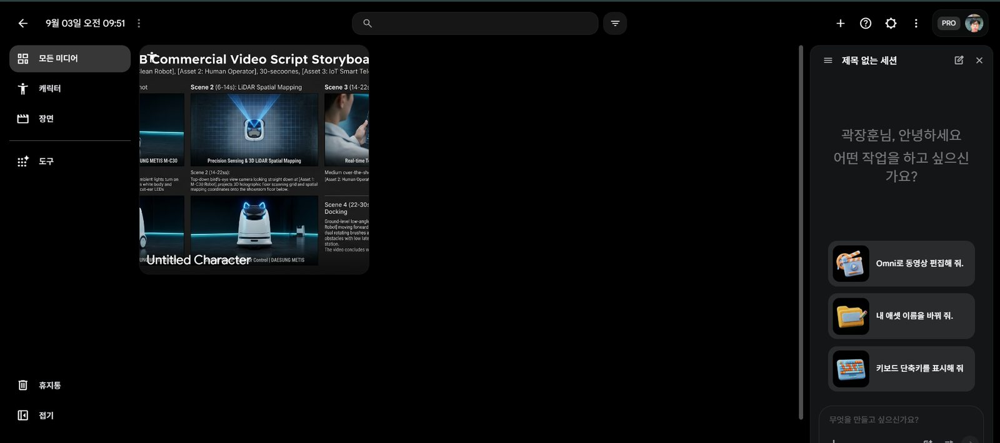
메뉴에이전트 채팅창여기에 한국어로왼쪽: 모든 미디어 · 캐릭터 · 장면 · 도구. 오른쪽 채팅창이 오늘의 작업대.
2에이전트 설정 — 확인은 '항상', 비율은 목적대로
채팅창 아래 슬라이더 아이콘 → 에이전트 설정 → 저장
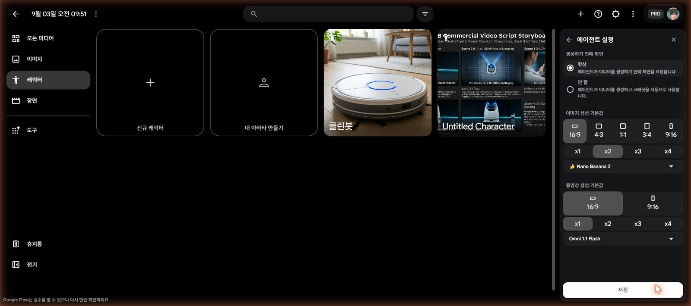
항상동영상 비율모델저장생성하기 전에 확인은 반드시 항상. '안 함'으로 두면 크레딧이 자동으로 빠진다.
3첫 문장 — 한 번에 다 넣는다
채팅창에 아래 문장을 붙여넣고 보내기 → 에이전트가 장면 5개를 짜 온다
채팅창에 붙여넣기
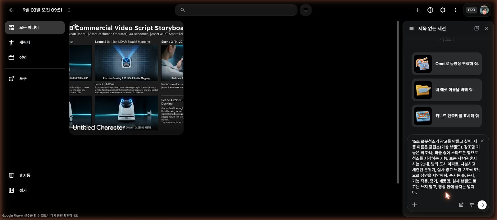
붙여넣은 모습실제 세션에서 첫 문장을 붙여넣은 화면.
크레딧 주의. 에이전트가 답 끝에 "각 장면을 3초 클립으로 만들어 볼까요?"라고 묻는다. 여기에 "네"라고 하면 5개가 한 번에(60~75 크레딧) 나간다. 아래 문장으로 답한다.
에이전트가 "클립을 만들까요?"라고 물으면
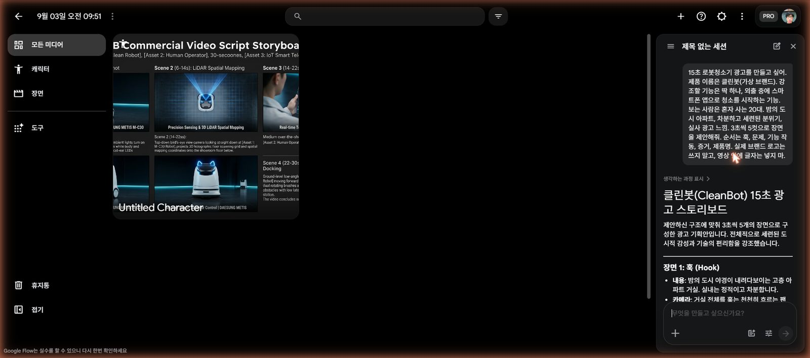
장면 1~5에이전트가 짜 온 다섯 장면(내용·카메라·조명·시간). "15초는 3초 클립 5개로"라고 제안한다.
4바로 승인하지 않는다 — 3번 컷 고치기
기능이 작동하는 컷(3번)이 눈에 보이게 한 번 고친다
채팅창에 붙여넣기
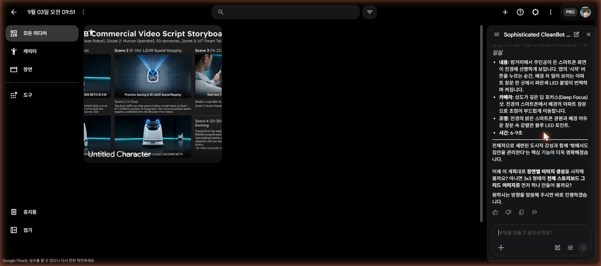
장면 3 수정됨실제 결과: 폰 화면(전경)과 창문의 파란 LED(배경)가 한 화면에 — 딥 포커스 샷으로 다시 짜 왔다.
5스토리보드 먼저 — 이미지 한 장 값
채팅창에 붙여넣기
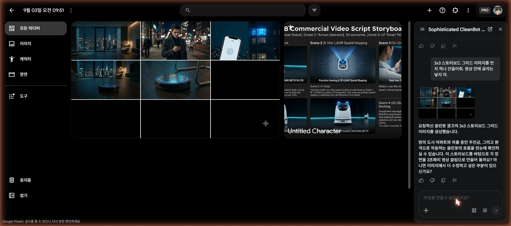
3×3 그리드 결과이미지 한 장에 다섯 장면. 마음에 안 들면 여기서(이미지 값으로) 고친다.
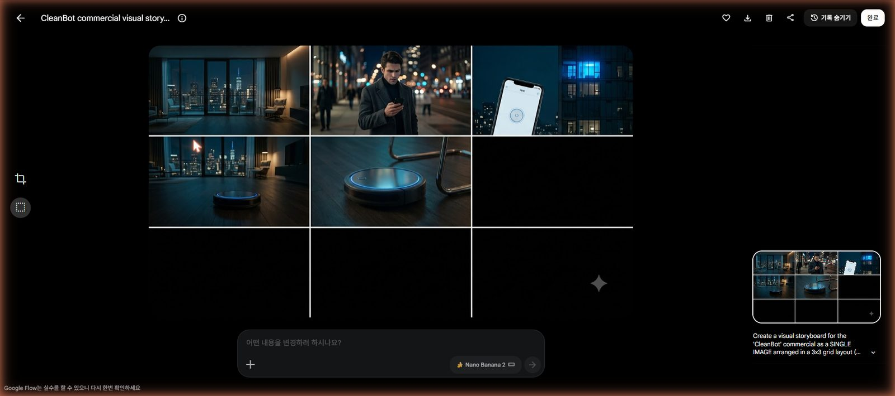
다운로드Flow가 쓴 영어 프롬프트이미지를 누르면 편집 화면. 오른쪽에 Flow가 내부적으로 쓴 영어 프롬프트가 보인다 — NO TEXT, NO LOGOS까지 우리가 쓴 대로.
스토리보드 한 칸만 고칠 때
6클립은 한 번에 하나 — 만들 때마다 완성본이 한 칸씩 찬다
핵심부터 만든다. 하나 만들고 → 확인 창에 '1개'인지 보고 승인 → 다음. 크레딧이 모자라면 중간에 멈춰도 그때까지 만든 컷으로 완성본을 만든다.
훅 0–3문제 3–6기능 6–9반응 9–12제품 12–15
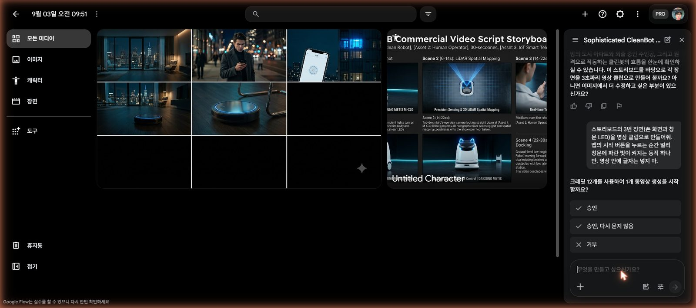
1개인지 확인승인누르지 말 것N개면 거부"크레딧 12개를 사용하여 1개 동영상 생성을 시작할까요?" — 1개일 때만 승인. "4개", "5개"라고 나오면 거부하고 한 컷만 다시 요청한다. 캐릭터(@)가 들어간 클립은 15.
7제품을 캐릭터로 등록한다
왼쪽 캐릭터 → 신규 캐릭터
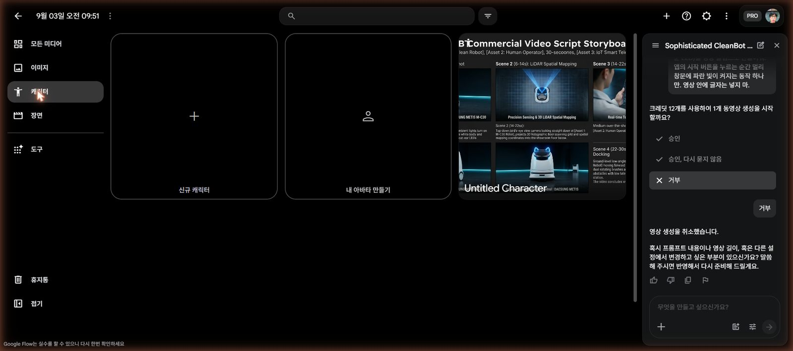
캐릭터신규 캐릭터
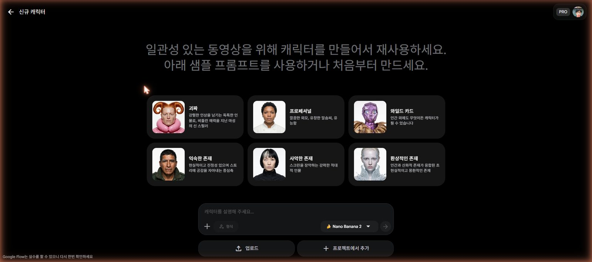
와일드 카드 = 사물도 됨"인간 외에도 무엇이든 캐릭터가 될 수 있습니다" — 제품을 캐릭터로 만든다.
"캐릭터를 설명해 주세요" 칸에 붙여넣기 → 만들기
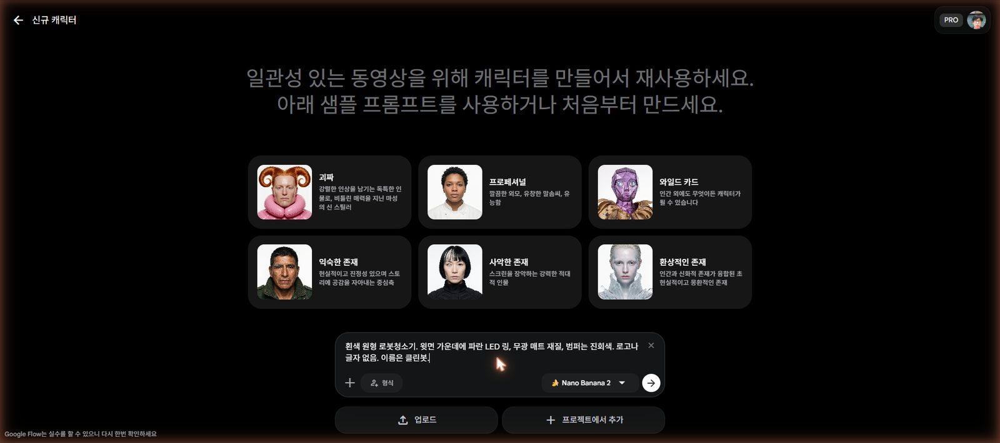
설명 입력 → 오른쪽 화살표
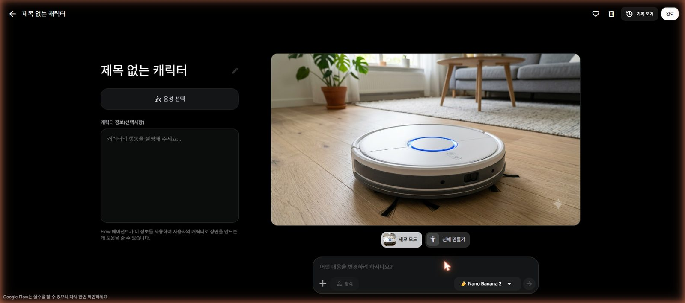
생성된 캐릭터실제 결과: 흰색 원형, 파란 LED 링 — 요청한 대로.
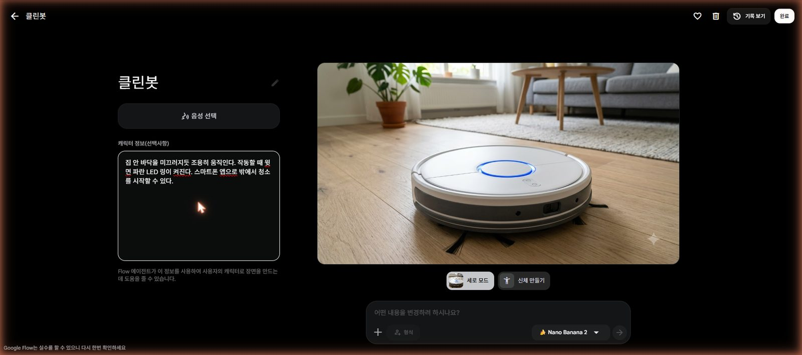
연필 → 이름캐릭터 정보완료
"캐릭터 정보(선택사항)" 칸에 붙여넣기 → 완료
8@로 부르기 — 어느 클립에서든 같은 제품
채팅창에 @ 입력 → 목록에서 내 캐릭터 선택 → 이어서 문장
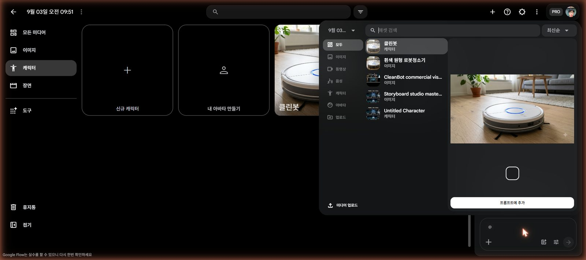
@ 목록캐릭터 선택
@캐릭터 선택 후 이어서 입력
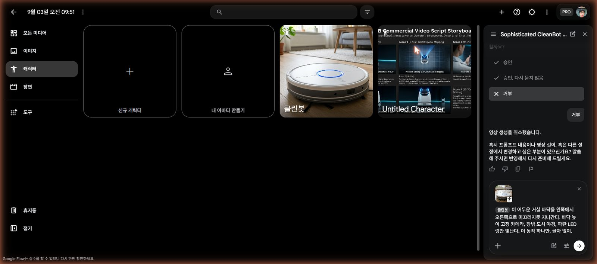
칩 + 문장입력칸에 캐릭터 칩이 붙고, 그 뒤에 동작 하나만 쓴다.
새 클립을 만들 때 앞 클립과 색감을 맞추는 문장 (문장 끝에 덧붙이기)
9Flow 안에서 이어 붙여 완성 → 다운로드 → 업로드
편집 앱은 쓰지 않는다. 만든 클립을 Flow 안에서 순서대로 이어 붙여 하나의 영상으로 만든다. 두 가지 방법 중 되는 것을 쓴다.
- 방법 A · 채팅으로 — 아래 문장을 붙여넣는다. 에이전트가 있는 클립만 이어 붙인다(새 생성 없음 → 크레딧 0). 확인 창에 크레딧이 뜨면 거부한다.
- 방법 B · 장면 메뉴로 — 왼쪽 장면 → 클립 하나를 열면 아래 타임라인이 보인다 → 타임라인 끝 + 로 다음 클립을 추가해 3 → 4 → 5 → (2 → 1) 순서로 놓는다 → 위쪽 다운로드.
방법 A · 채팅창에 붙여넣기 (만든 컷 번호만 남기기)
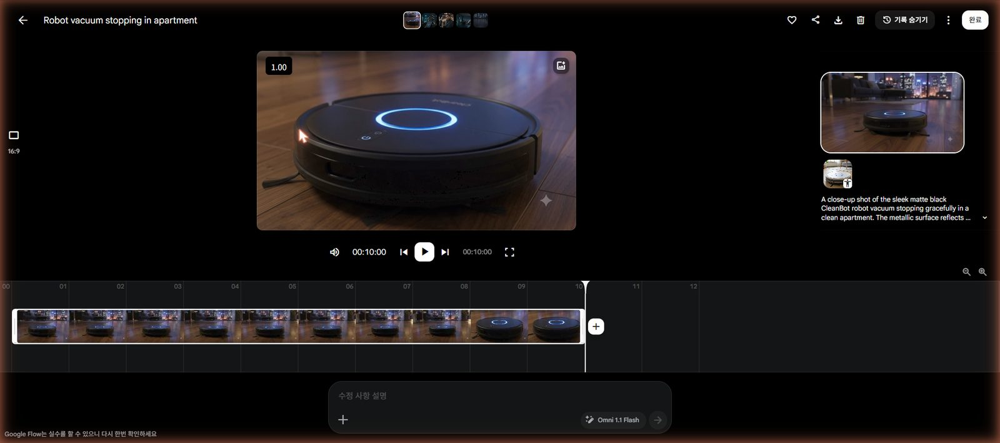
다운로드클립 바꾸기타임라인 — 끝의 + 로 다음 클립 추가클립을 열면 나오는 편집 화면. 아래 타임라인에 클립이 놓이고, 끝의 +로 다음 클립을 이어 붙인다. 다 붙였으면 위쪽 다운로드 아이콘.
제품 이름과 자막은? 영상 안에 글자를 넣지 않았으니 유튜브 제목·설명에 쓴다. 예: "클린봇 — 밖에서 누르면, 집이 청소된다 (AI 제작 가상 브랜드, 수업용)". 마지막 5번 컷에서 폰 화면에 '완료' 알림이 뜨는 것으로 이야기가 끝난다.
속도감은 순서와 길이로. 이어 붙일 때 핵심 컷(3·4)을 앞에 두고, 각 클립은 타임라인에서 앞뒤를 잘라 3~4초만 남기면 15초 안에 들어오고 빨라 보인다. 클립 자르기가 안 되면 그대로 이어도 된다(5클립 = 50초).
결과가 이상할 때 — 한 칸만 고친다
대괄호만 바꿔서
프롬프트를 더 다듬고 싶으면 제미나이(Gemini)에서. 수업에서 쓰는 AI는 제미나이입니다. 아래 문장을 제미나이에 붙여넣으세요.
제미나이에 붙여넣기